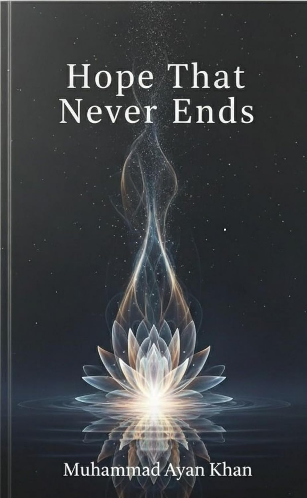

Muhammad Ayan Khan / Writing
Things I Write
Words written to inspire — from a published motivational book to ideas about growth, philosophy and business.
Books

Hope That Never Ends
My debut motivational book — written through real experiences, struggles and victories for anyone who needs a reason to keep going when life gets heavy.
“No matter how dark the night, hope is the light that never truly ends.”
Articles
The existing portfolio mentions managing three content websites and writing to inspire and empower readers.
[PLACEHOLDER — No article titles or URLs were provided. Add only published articles with verified links.]Publications
“Hope That Never Ends” is currently listed as self-published via Amazon, with a free reading copy on Ourboox.
[PLACEHOLDER — Add any other verified publications, essays or guest posts.]Ideas & Notes
Topics already connected to my portfolio writing and interests: hope and resilience, entrepreneurship in Pakistan, and ideas drawn from Islamic philosophy, Stoic thought and psychology.
[PLACEHOLDER — Mark draft pieces clearly so they are not presented as published work.]